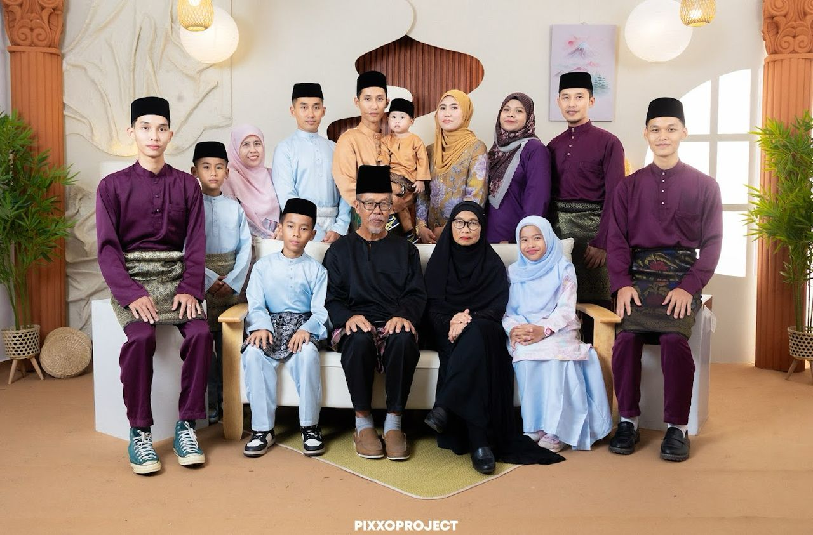

"Like branches on a tree, we grow in different directions, yet our roots remain as one."

Our Precious Family Portrait
A structural mapping of the core pillars behind my academic journey and personal development.
Name: Abd Aziz bin Daud
Profession: Clerk
The strong pillar and advisor of our household.
Name: Azizah Binti Ahmad
Profession: Banker / Teacher
The heart and warmth that keeps our home complete.
Daily Priority Order (Ordered List):
Weekend Recreations (Unordered List):
Guiding Pillars (Custom List Markers):